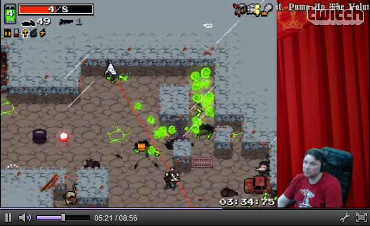

Throne 2 Speech
Throne 2 Speech is a virtual commentator for Nuclear Throne by Vlambeer.
Throne 2 Speech uses a Text to Speech engine to provide commentation on the progress of your Nuclear Throne runs, based on data fetched via the Stream Key API in Nuclear Throne.
PLEASE NOTE! This requires Update 98, which is currently still in private beta!
How does it sound like?
The Twitch logo is a bit annoyingly in the way on the embedded player. You can try fullscreen if you can't see properly otherwise.
How do I get it
Click on the "Virtual Commentator" -tab at the top of the page for full setup instructions.
What if I'm not a streamer?
While this was done primarily for streamers, you might still get something out if it even if you don't stream. Some stuff it says could be amusing to you.
What browsers does this work on?
Probably any modern browser works, tested on Chrome, Firefox and Edge, assumed to work on Safari.
Can I contribute somehow?
Maybe. The source code is publicly available at https://github.com/lietu/throne2speech. If you want to contribute code, text, or just have feature requests, go there.
Who made this?
Lietu made this.
Legal stuff
Nuclear Throne is (probably) a trademark of Vlambeer. Throne 2 Speech is not affiliated with Vlambeer and vice-versa. Neither is the creator of Throne 2 Speech.

Copyright © 2015-infinity Janne "Lietu" Enberg.
Virtual Commentator
You only need to fill in your SteamID64 and Stream Key for Throne 2 Speech to be able to connect to the API. After that, the virtual commentator can start commenting on your progress.
Easiest way to get your SteamID64 is to go to https://steamid.io/lookup and click on "Sign in through Steam", and then authenticate yourself with your Steam user account. After that click on your profile image and choose "profile" and look for the the "steamID64" -line.
Locating your stream key from Nuclear Throne is easy. Just go to Settings -> Game, and click on "Stream Key" if it says "Disabled" to generate one.